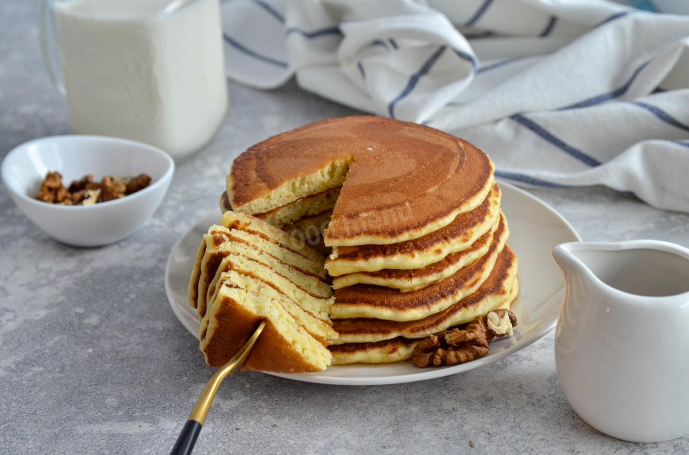
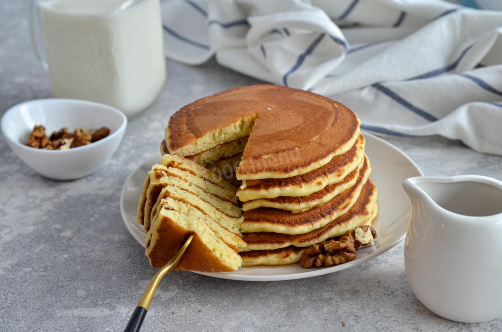
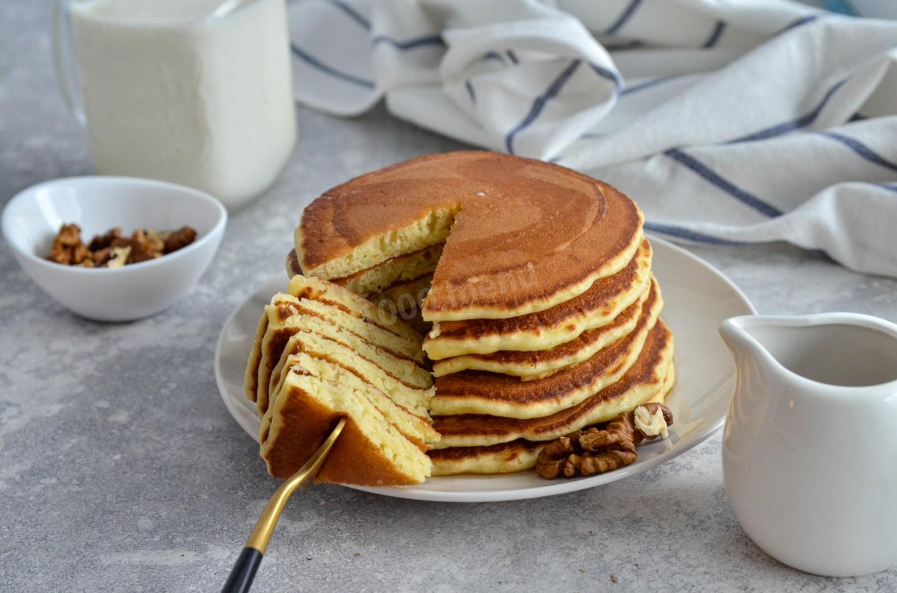
| Продукты | Колличество |
| Кефир | 0.5 мл. |
| Яйца | 2 шт. |
| Мука | 300 гр. |
| Сахар | 2 стол.л. |
| Сливочное масло | 70 гр. |
| Сода | 1 чайн.л. |
| Соль | 0.5 чайн.л. |
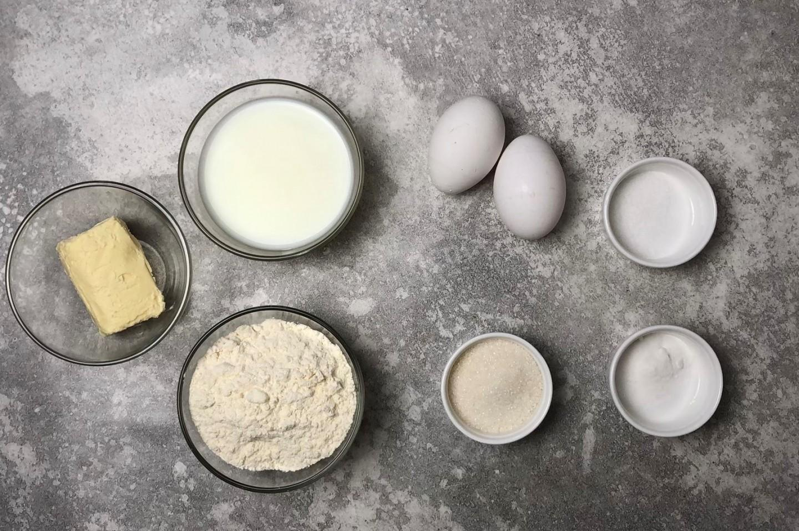
Подготовьте продукты. Кефир лучше взять пожирнее, он более густой. Для более жидкого кефира потребуется больше муки, и панкейки могут стать "резиновыми". Чем кислее будет кефир, тем пышнее получатся панкейки, так как реакция между содой и кислотой будет сильнее. Поэтому отлично подойдет старый, уже прокисший кефир. Вместо кефира можете взять натуральный йогурт без добавок.
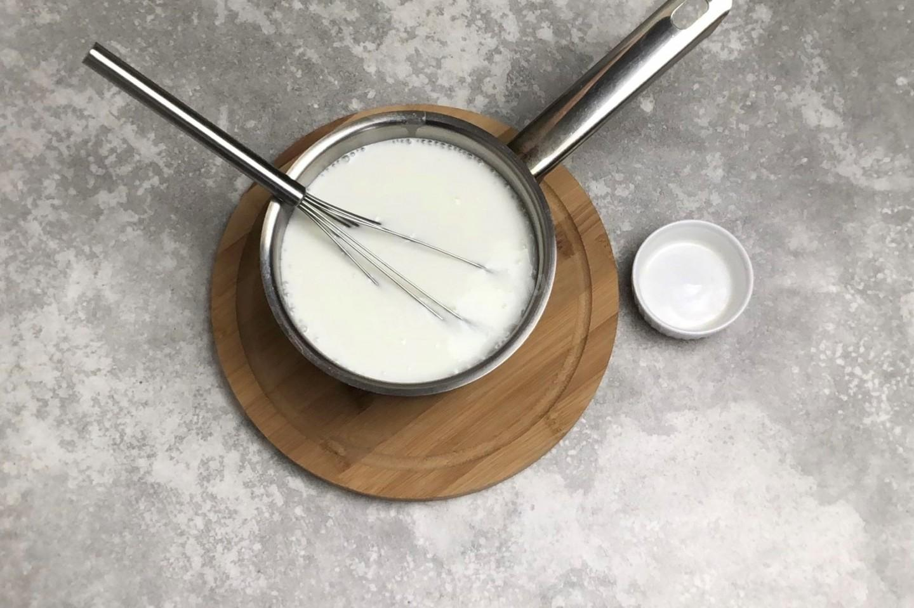
Кефир налейте в ковш и слегка подогрейте. Делайте это на небольшом огне, при постоянном помешивании, чтобы он не свернулся. Всыпьте в кефир соду и перемешайте венчиком. За счет того, что кефир теплый и кислый, начнется бурная реакция между содой и кислотой. Масса сразу запузырится и увеличится в объеме. именно благодаря этому панкейки приобретут свою пышность.
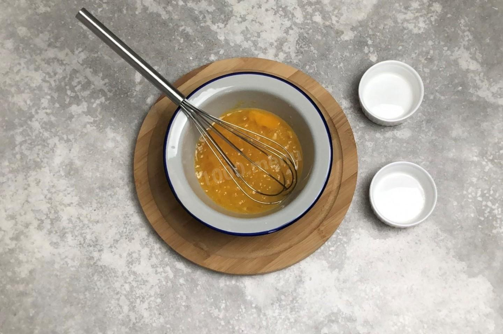
Яйца разбейте в другую миску. Добавьте к ним сахар и соль. Слегка взбейте яйца венчиком или вилкой. Не надо их взбивать до пены, просто размешайте. Пышность в этом рецепте достигается не за счет взбитых яиц. Яйца вымойте в теплой воде с содой, так как на их поверхности могут быть вредные бактерии.
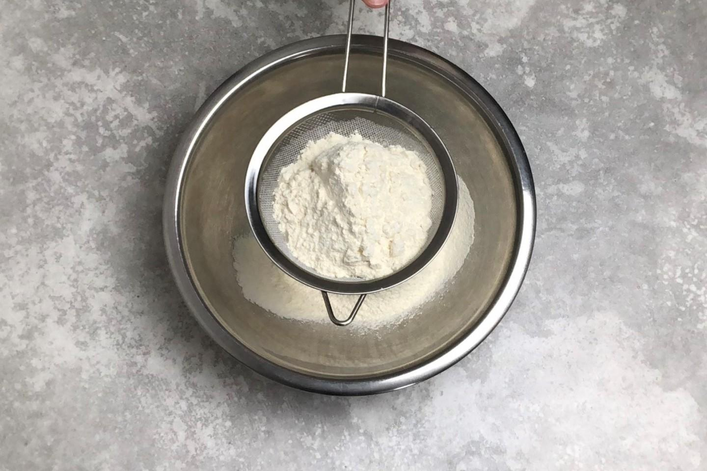
Муку просейте в большую миску. Просеивание обогащает муку воздухом, что делает выпечку более пышной.
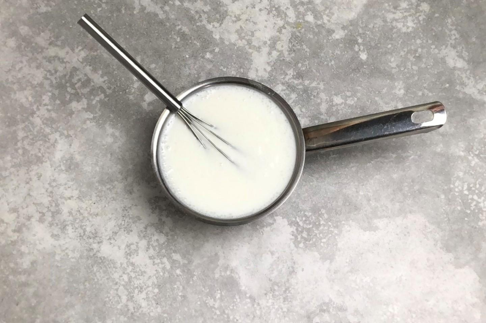
Влейте яичную смесь к кефирной. Аккуратно перемешайте.
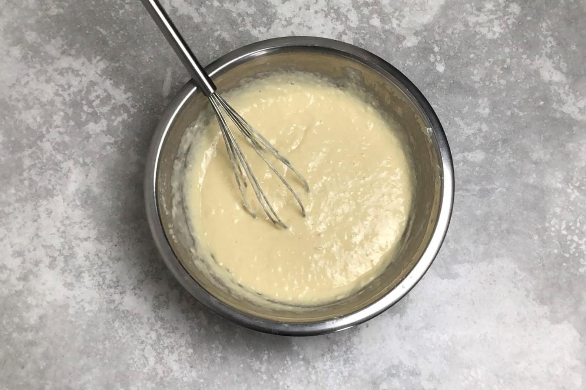
Влейте жидкие ингредиенты в муку тонкой струйкой, при постоянном размешивании венчиком. Если сделать наоборот, всыпать муку в кефир, то в тесте образуются комочки. А так комочков удастся избежать. Размешайте тесто до однородного состояния. Не переусердствуйте с размешиванием, как только вся мука равномерно распределится, остановитесь. Пусть в тесте останется как можно больше воздуха. Возможно муки понадобится чуть меньше или больше.
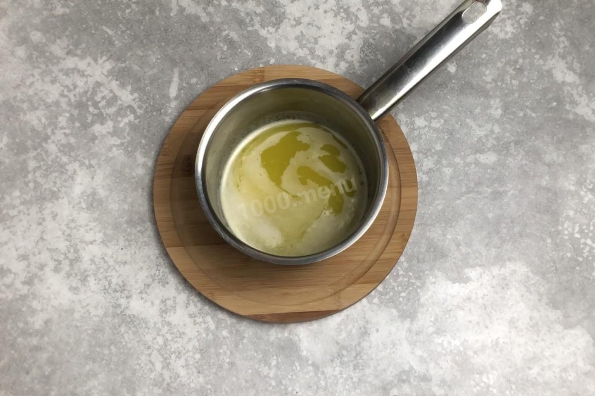
Растопите в сотейнике сливочное масло. Делайте это на небольшом огне. Следите, чтобы масло не начало кипеть, от него может отделиться сыворотка. Можете не ждать когда растопится весь кусок, а снимать с огня. От тепла остатки масла все равно растают.
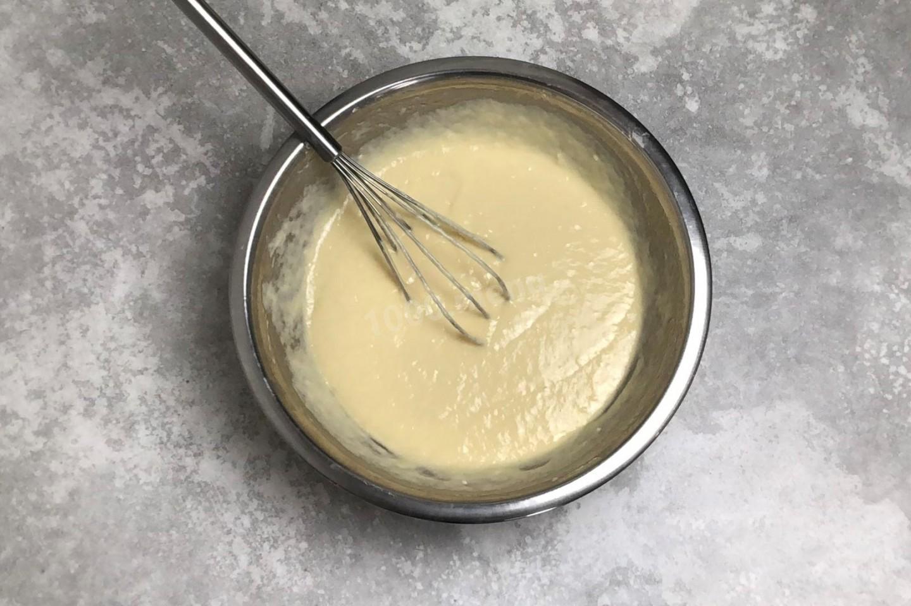
Растопленное масло остудите, а затем влейте в тесто. Хорошо размешайте тесто венчиком, чтобы все масло перемешалось. Сливочное масло придаст панкейкам очень приятный слегка ореховый аромат. Тесто будет по консистенции как густая сметана. Если тесто получилось слишком жидким, то вмешайте в него ещё немного муки, если слишком густым, то добавьте немного кефира.
На среднем огне разогрейте сковороду. Лучше всего взять специальную блинную с антипригарным покрытием. Если такой нет, то возьмите чугунную или любую, к которой не прилипают блины. Это важно, потому что жарить панкейки надо без масла. Если вы не уверены в своей сковороде, то перед первым блином смажьте ее тонким слоем растительного масла. Выкладывайте тесто на сковороду ложкой, формируя ровный блин среднего размера.
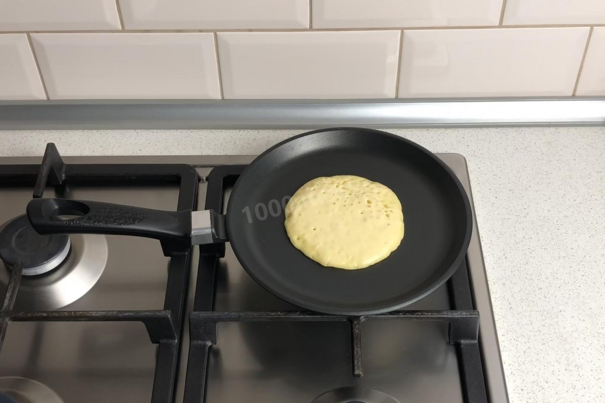
Жарьте панкейк на среднем огне до появления пузырей на поверхности.
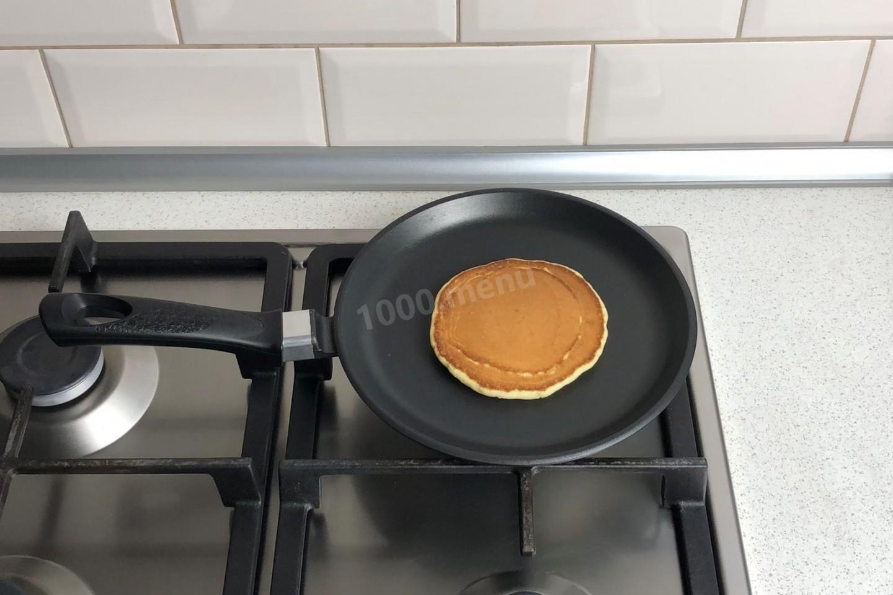
Переверните блин на другую сторону. Жарьте его до готовности с другой стороны. Таким образом пожарьте все панкейки. Если панкейки получаются не очень пышными, то можно добавить в тесто ещё немного муки. Традиционно их делают размером с блюдце. Готовые панкейки складывают один на другой, а сверху кладут масло. Едят панкейки, отрезая сразу всю стопку, наподобие куска торта.